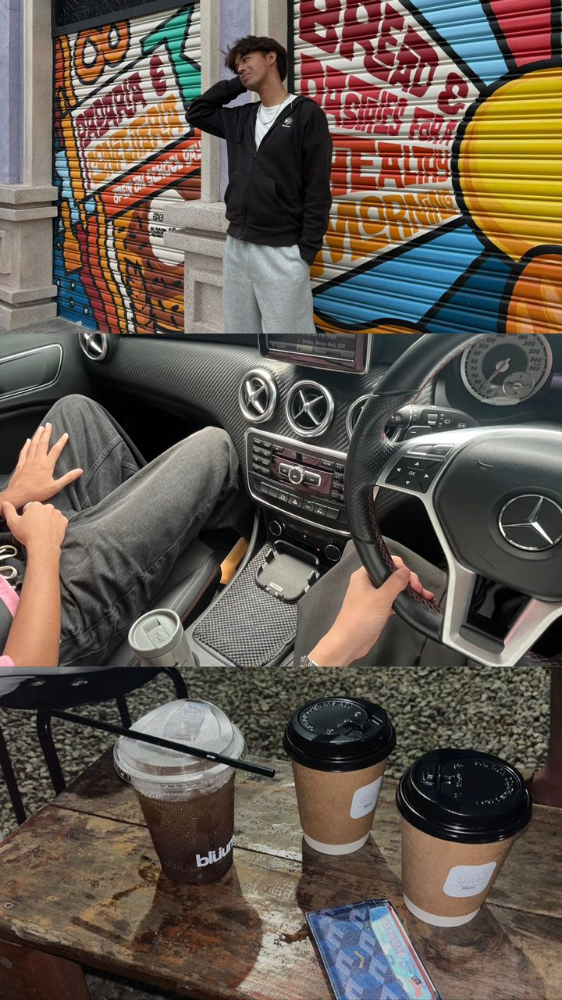

My name is Adam Iskandar bin Mustafa Kamal. I was born in Kuala Lumpur, the energetic capital of Malaysia, and I am 21 years old. Despite being born in KL, I grew up in the nearby state of Selangor, which greatly influenced who I am now. My viewpoint on life has been consistently inspired and shaped by the various environment I was exposed to while growing up in Selangor, which is full of people, culture, and ideas.I am the youngest of five siblings and come from a loving, close-knit family. My older siblings have greatly influenced and shaped my views, and as the fifth kid, I have had the opportunity to learn from their experiences. Unity, mutual respect, and support have always been important to our family, and I uphold these principles in everything I do.I take satisfaction in being receptive to new experiences and taking in knowledge from those around me, as I am still on a quest for self-discovery. Every individual I encounter and every location I visit, in my opinion, has something worthwhile to offer, and I'm constantly keen to learn and develop. For me, life is about being compassionate, maintaining my sense of reality, and constantly working to improve myself every day.
Aside from my passion for coffee shops, my keen interest in fashion makes me special. Fashion, in my opinion, is a means of self-expression that goes beyond simply selecting what to wear. My clothing frequently expresses my feelings and how I want other people to perceive me. I feel more self-assured and at ease with myself when I dress up and try out various looks. I've learned to value details and become more conscious of how presentation affects perception and self-worth thanks to fashion. Entering odd cafes is one of the things I truly enjoy doing in life. Although it can seem easy to some, I find this pastime to be exciting and exploratory. Every café is unique in its ambiance, menu, and vibe. Café hopping offers me a welcome change of pace, whether I'm sampling a new coffee mix, taking in the stylish design, or simply relaxing and taking in the scenery. It's a practice that helps me psychologically recharge and feel motivated, particularly while I'm balancing the rigors of school.
I'm a final-year student in the Faculty of Information Science's Diploma in Information Management program at Universiti Teknologi MARA (UiTM). I now have a solid foundation in data organization, information management, and the critical connection between knowledge and technology thanks to this curriculum. My scholastic journey has been both demanding and fulfilling, enabling me to cultivate practical skills and critical thinking that are applicable to the modern digital world.Participating in extracurricular activities has also helped me learn the value of accountability, time management, and maintaining my commitment to my objectives.I am technically proficient in a wide range of computer skills. I can create and comprehend the reasoning behind websites and basic software development because I am skilled in HTML and C++. I've also worked with programs like Adobe Premiere Pro, Adobe Photoshop, and Canva in digital design and multimedia editing. I've been able to produce captivating images and text for presentations, homework, and personal projects because to these abilities.
Any Inquiries Please Email Meadamizkndr04@gmail.com
END OF PAGE Let's Go Up